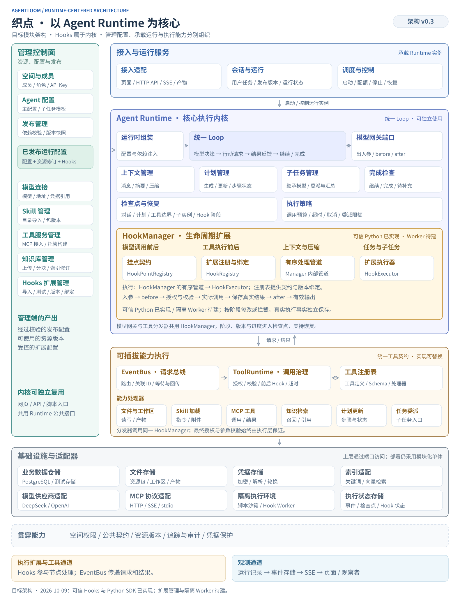
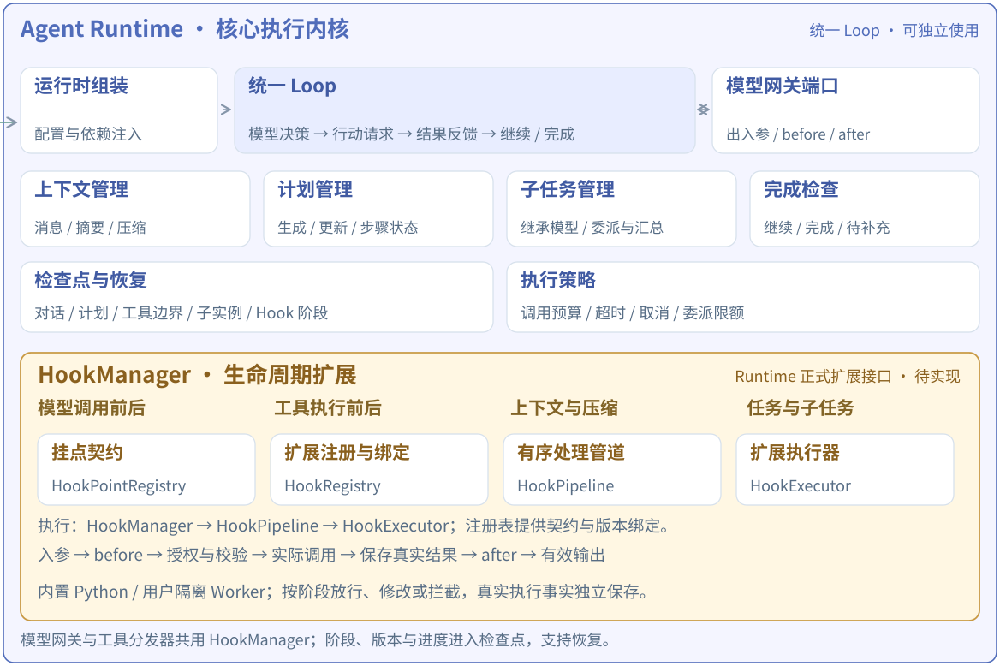

总体架构、分层与模块职责
采用模块化单体：一个 Vue 工作台、一个 Python 服务、一个 PostgreSQL 数据库。内部明确管理配置、任务运行、能力执行和持久化边界，再按实际规模拆分部署。
1. 总体框架
Agent Runtime 是产品核心。核心由统一 Loop、上下文、计划、子任务、完成判断、检查点和 HookManager 组成。管理控制面提供资源与发布配置，运行服务承载执行实例，能力系统提供可插拔工具；下面六层是职责划分，不代表模块的重要性排序。

配置管理
空间与成员、模型连接和 Key、Skill 包、工具服务、知识库、Agent 草稿、子 Agent 配置、发布版本。
产出：经过校验的发布快照。
任务运行
网页或 API 发起任务、循环执行、能力调用、计划与子任务、取消和恢复、事件记录、知识引用、文件产物。
输入：发布快照 + 用户任务 + 可信执行上下文。
发布是这两部分的连接点：草稿可以编辑，运行只读取选定发布版本。子 Agent 是主 Agent 版本内的任务配置，随主 Agent 发布；运行时按需创建实例，继承主模型，不配置独立执行模式。
这是逻辑职责图。应用服务会直接通过仓储接口读写数据，Runtime 会通过模型网关调用模型；并非每个调用都必须逐层穿过所有模块。
2. 六层职责与边界
| 层 | 主要职责 | 对外边界 | 现有位置与调整 |
|---|---|---|---|
| 交互层 | 管理表单、配置编辑、运行对话、事件显示、引用及产物下载。 | 通过 HTTP/SSE 调用平台。 | apps/web/src；运行页已拆分，资源管理仍集中在 App.vue，建议按功能拆页。 |
| API 接入层 | 解析请求、识别身份、校验输入、转换 HTTP 错误、提供事件流。 | 调用应用服务，返回稳定 API 契约。 | routes/、schema.py、dependencies.py；将路由中的业务事务和 SQL 下移。 |
| 应用服务层 | 完成保存草稿、发布、导入资源、创建/恢复/取消运行等完整用例；管理事务和业务约束。 | 调用仓储及 Runtime 的启动接口。 | services/ 已有部分实现；补齐资源、发布和完整 RunService。 |
| Agent Runtime | 执行已发布配置：推理、行动、观察、继续、完成或等待补充。 | 依赖模型、工具调用、检查点、事件写入等接口。 | packages/runtime；继续隔离 provider 和解密细节。 |
| 能力执行层 | 路由工具请求、过滤工具目录、校验权限与参数、治理执行、返回统一结果。 | 处理器调用具体适配器。 | event_bus.py、tool_runtime.py、handlers/ 已落地。 |
| 基础设施层 | 数据库、文件、网络协议、容器、密钥与索引的具体实现。 | 实现上层声明的接口，由组装入口注入。 | database.py、store.py、assets.py、provider.py、mcp_tools.py、sandbox.py；仍待按接口收敛。 |
依赖规则：业务规则不依赖 FastAPI；Loop 不导入 SQL、MCP 客户端或具体文件工具；适配器实现接口，应用入口负责组装。公共配置、请求、结果和事件类型放在 contracts，避免模块通过任意字典相互猜测字段。
3. 平台应用服务：管理什么、交付什么
| 建议模块 | 负责的功能 | 交付给其他模块 | 当前状态 |
|---|---|---|---|
| Identity / Space | 登录、空间成员、角色、邀请码、API Key、当前调用者范围。 | 可信的 user_id、space_id、权限集合。 | 基础 owner/member 已有；多空间切换与细粒度角色尚不完整。 |
| ModelConnectionService | DeepSeek/OpenAI 连接配置、模型 ID、聊天/embedding 用途、连接测试与凭据轮换。 | 模型配置 + 凭据引用。 | 已有管理接口；目标是所有供应商凭据经 SecretStore 解析。 |
| SkillService | 文件夹/Git 导入、SKILL.md 解析、目录和附件管理、依赖与兼容信息、版本。 | 指定版本的 Skill 元数据与包引用。 | 已有目录导入和按需加载；完整不可变资源版本与宿主兼容矩阵待补齐。 |
| ToolService | 外部 MCP 接入、工具发现/测试、托管 Python 工具导入与构建、schema 和服务状态。 | 可发布的工具服务版本与工具目录。 | 已有 HTTP/SSE 与 Docker stdio 路径；容器能力仍待实际环境验证。 |
| HookExtensionService | 导入扩展包、声明权限、样例测试、发布版本、绑定 Agent 或能力；运行时读取冻结的发布绑定。 | 扩展版本、配置与绑定快照。 | 目标模块，尚未实现；执行机制归属 Runtime 的 HookManager。 |
| KnowledgeService | MD/TXT/SQL 上传、解析分块、向量化和关键词索引、文档状态与索引版本。 | 可检索资料集及索引修订。 | 入库与检索目前都在 knowledge.py，建议拆成 IngestionService 与 Retriever。 |
| AgentService | 主 Agent 草稿、Prompt、模型与策略、资源绑定、内嵌子 Agent 配置。 | 经过结构校验的 AgentConfig。 | 已有，保存逻辑部分位于路由。 |
| ReleaseService | 校验依赖资源、解析修订、生成发布快照、发布版本编号与历史。 | AgentVersion / RuntimeSpec。 | 快照构建已有，发布事务仍在 routes/agents.py；资源物理版本未完全冻结。 |
| RunService | 创建 Session/Run、绑定发布版本、空间配额、调度 Runtime、停止/恢复、终态、历史、产物入口。 | run_id、状态、事件流与结果。 | 分散在 routes/runs.py 和 services/runs.py，应成为任务生命周期的唯一业务入口。 |
管理控制面与运行服务分开：资源、Agent 配置及发布主要属于管理控制面；RunService 管理实例生命周期，属于运行承载部分。
资源管理负责“导入、配置、校验、版本”；运行时处理器负责“按已发布的授权实际使用”。例如，SkillService 导入包，SkillHandler 在任务执行中读取该包；ToolService 发现 MCP 工具，MCPHandler 在运行中调用它。
4. Runtime：把配置变成持续执行的任务
| 模块 | 单一职责 | 现有实现 / 下一步 |
|---|---|---|
| RuntimeFactory | 接收发布快照及依赖接口，组装 Loop、注册表、总线和处理器。 | runtime.create_engine() 已有；后续使用类型化 RuntimeSpec。 |
| Loop / Engine | 区分模型回答和 tool_calls，维护轮次与 pending 调用，将工具结果回填对话，决定下一轮或结束。 | engine.py；已经去掉具体工具执行分支。 |
| HookManager | 在明确生命周期节点按顺序调用扩展；管理允许的修改、拦截、超时、异常与恢复语义。 | 目标模块，尚未实现。现有 EventBus.subscribe 是观察通知，尚不具备完整可等待、可修改、可拦截的 Hooks 契约。 |
| ModelGateway | 统一模型请求与响应、凭据解析、限流和用量记录，对接不同供应商适配器。 | 目标接口。当前 Engine 仍直接调用 provider.chat 并持有 decrypt 回调；provider 已实现协议校验和有限重试。 |
| ContextManager | 管理任务目标、对话与工具消息、事实摘要、上下文预算；压缩时保持工具调用/结果成组。 | context.py 已有压缩策略；当前按字符预算。 |
| PlanManager | 保存和调整计划及步骤状态；Plan 要求先计划再自动执行。 | planning.py 和 planning handler；ReAct/Plan 共用 Loop。 |
| CompletionPolicy | 依据目标、执行证据与未完成计划判断 complete / continue / blocked。 | completion.py；当前同一模型做完成检查，不能替代真实工具验证。 |
| ChildTaskManager | 创建、恢复、收集子任务；继承主模型，维护子任务上下文、资源范围与预算。 | 当前由 delegation handler + Engine.loop 实现；后续抽成明确接口。子 Agent 不配置独立模式，内部可以维护任务步骤。 |
| CheckpointManager | 记录对话、计划、调用边界、子实例和恢复信息；未知执行结果先核对，避免自动重放。 | Engine.persist + API 注入 save 已有；后续收敛为 CheckpointStore 接口及版本迁移规则。 |
| ExecutionPolicy | 统一运行时限、模型调用预算、最大轮次、委派数和恢复策略。 | 当前常量分散在 Engine、RunService、ToolDefinition 中；建议集中成策略对象。 |
Loop 仍负责流程判断：调用模型、处理 tool_calls、等待结果、继续执行、判断完成。这些是循环本身的职责。具体工具的协议、文件操作和服务地址由下面的能力层处理。
4.1 HookManager：Runtime 的生命周期扩展接口
模型和工具的出入参、用户扩展 SDK、挂点 Schema、执行顺序和恢复规则已进一步细化，见 统一 Hooks 与用户扩展设计 v0.1。下文为总体职责；详细设计将 Patch 细分为 PatchInput / PatchOutput，并采用每阶段稳定排序的管道。

Hooks 直接参与执行流程，调用方需要等待 HookResult，再决定继续、应用修改或阻止当前阶段。HookManager 归属 Runtime；Loop、模型调用包装器、上下文管理器、工具分发器和子任务管理器在各自边界调用它。管理端后续可以管理 Hook 配置，但 Hook 执行机制属于运行内核。
| 生命周期 | 建议 Hook 点 | 允许的作用 |
|---|---|---|
| 运行起止与恢复 | before_run、after_run、before_resume | 初始化扩展上下文、前置策略检查、收尾记录；终态由运行状态机决定。 |
| 上下文 | before_context、before_compact、after_compact | 注入授权范围内的资料、整理输入、补充压缩保留信息；维持工具消息协议完整性。 |
| 模型调用 | model.chat.before / after；model.embedding.before / after | Chat 与 Embedding 各自使用类型化契约；修改允许的消息与参数，保留 tool_calls、真实用量和状态。Embedding 预处理随知识索引版本固定，详见补充设计。 |
| 工具执行 | tool.before / after | 执行前调整参数或拦截；执行后处理供模型读取的结果视图、附加标记。工具执行事实单独保留。 |
| 子任务 | before_delegate、after_delegate | 调整授权范围内的委派任务与上下文、检查创建条件、整理子任务返回内容。 |
| 异常与取消 | on_error、on_cancel | 分类错误、附加诊断、限时清理；取消向下传播，未知副作用不能自动重试。 |
首期 HookResult：Continue 放行、PatchInput 修改允许的入参字段、PatchOutput 修改允许的输出视图、Reject 在允许拒绝的 before 阶段阻止执行并返回原因。后置 Hook 不能撤销已发生的动作或篡改成功/失败事实。暂停、跳过执行并返回替代结果等能力若后续加入，需要明确的新结果类型与状态机支持。
只读 HookContext 携带 run/instance/call 标识、发布版本、当前阶段和必要的脱敏数据；禁止通过任意共享字典修改整个 Engine。工具名、身份、模型绑定、权限范围与发布版本在首期均为受保护字段；工具参数修改后再次校验。子 Agent 继承发布时确定的 Hook 配置，按自己的实例上下文执行，不能扩大主运行授权。
Loop 提交工具请求 → EventBus 路由至工具分发器 → 查工具定义与初步授权 → HookManager 执行 tool.before 管道 → 重新校验参数、权限和执行策略 → Handler 执行 → 保存真实结果与调用进度 → HookManager 执行 tool.after 管道，加工模型可见结果 → ToolOutcome 经总线返回 Loop
执行规则：before、after、error、finally 各阶段按发布版本固定的优先级和绑定顺序执行；后一个 Hook 看到前一个通过校验的修改。挂点注册表提供 Schema 与允许动作，扩展注册表提供版本与绑定，实际执行由 HookManager → HookPipeline → HookExecutor 完成。可信内置函数可在进程内执行，团队上传或 Git 导入的代码由隔离 Worker 执行。Hook 有独立超时，也计入总运行预算。关键策略 Hook 出错或超时应阻断当前阶段，纯观测扩展可以记录错误后继续；这项策略由平台确定，不能由模型决定。
恢复规则：检查点记录 Hook 配置版本、阶段、必要扩展状态和工具是否实际发起。恢复时依据已保存阶段继续；若工具已完成而 after_tool 失败，应保留真实结果，不能为重跑后置 Hook 再执行工具。对于执行中中断、结果未知的 Hook，也必须区分可重算的数据转换与外部副作用，不能承诺自动安全重放。取消后的清理 Hook 有短时限，不能吞掉取消继续任务。
职责区别：Hooks 是可等待、受约束的执行扩展；EventBus 是请求/响应通道；Observer 是通知消费者。核心权限、Schema 校验和状态机规则仍由 Runtime/ToolRuntime 保证，不能因为配置了 Hook 就省略。
5. 能力执行层：请求与实现解耦
Loop │ ToolRequest：调用 ID、工具名称、参数、恢复状态 ▼ EventBus：按 topic 接收请求，管理 correlation_id 与等待结果 ▼ ToolRuntime：查注册表 → 权限与参数校验 → 执行策略 → 调用处理器 ▼ Handler：使用具体能力 │ ToolOutcome └──────────────────────→ Loop 回填模型上下文
| 模块 | 负责什么 | 边界 |
|---|---|---|
| EventBus | topic 路由、关联请求与响应、嵌套请求、超时/取消传播、观察通知。 | 总线不解释工具名或参数，不访问数据库；当前统一 topic 为 tool.execute。 |
| ToolRegistry | 注册名称、描述、JSON Schema、handler 和策略；生成当前实例可见工具目录。 | 重复名称拒绝；可见范围与实际调用均按当前实例绑定校验。 |
| ToolRuntime / Dispatcher | 解析请求、找到 handler、校验授权与参数、约束 Plan/恢复规则、处理超时与统一结果。 | 知道工具注册协议，具体执行逻辑留在 handler。 |
| WorkspaceHandler | 任务文件读写、路径与大小限制、产物定位。 | 任务目录与平台源代码/凭据目录隔离；子任务有自己的目录。 |
| SkillHandler | 按需读取 SKILL.md、参考资料和脚本；向 Sandbox 提交命令。 | Skill 是包含指令与附件的包；脚本执行需独立执行环境。 |
| MCPHandler | 把平台工具调用转换成 MCP 调用，处理 MCP 结果和错误。 | MCPClient 处理具体协议连接；平台其他内置能力也可直接注册。 |
| KnowledgeHandler | 根据当前实例绑定检索 Wiki，并维护回答引用。 | 通过 Retriever 接口检索；上传、建索引由管理流程负责。 |
| Plan / DelegateHandler | 将模型更新计划或委派子任务的请求转交 PlanManager / ChildTaskManager。 | 经注入接口调用 Runtime，避免直接导入和操作整个 Engine。 |
当前 ToolContext 包含可变 frame/state 和运行回调，适合同进程的第一版。目标是缩小为 Workspace、ResourceScope、PlanEditor、ChildTaskRunner 等所需接口，减少任意处理器修改整个运行状态的机会。
6. 两条事件通道与公共契约
执行请求：要一个结果
tool.execute 是一对一请求。调用方等待返回；关联 ID 匹配结果；取消与超时传给执行方。
现有：EventBus → ToolRuntime → Handler。
运行记录：通知发生了什么
tool.started、plan.updated、run.completed 是事实记录，用于页面、审计和排查。
现有：emit → 脱敏 → 数据库 events → SSE → 前端。
页面断开 SSE 不决定工具是否继续执行。总线的 request.completed 只表示收到回包，回包里仍可能是工具执行失败。总线可选观察者的失败已隔离；关键检查点与运行记录当前直接落库，数据库失败仍可能中止运行，后续应明确事件持久化的失败与背压策略。
| 契约 | 建议包含的信息 | 现状 |
|---|---|---|
| AgentConfig / ChildConfig | 主配置、资源绑定、子任务模板；子配置不含 model/mode。 | Pydantic / 前端类型已有，尚未统一生成全部共享类型。 |
| RuntimeSpec | 已解析发布版本、模型与资源修订、子配置、执行策略。 | 当前为 snapshot 字典，目标改为类型化对象。 |
| ExecutionContext | 平台注入的 space/user/run/instance、工作区、授权范围、取消与存储接口。 | 现有 ToolContext 已与模型参数分开，仍包含较宽的共享状态。 |
| ToolRequest / ToolOutcome | 调用名与参数、调用 ID、结果与状态；后续明确错误码和未知结果语义。 | 已有 dataclass；request_id 由总线 Event 携带。 |
| HookSpec / HookContext / HookResult | 固定版本的扩展声明、只读阶段上下文、Continue/Patch/Reject 及字段白名单。 | 本轮架构新增；待实现与验证。 |
| RunEvent | 事件类型、顺序号、run/instance/request/call 关联、必要且脱敏的 payload。 | 数据库顺序号与 SSE 已有；完整类型化事件 schema 待补齐。 |
| Checkpoint | 检查点格式版本、消息、计划、pending 边界、处理器状态和子实例。 | 已有加密保存与旧格式兼容；后续增加显式 schema 迁移。 |
目标边界：模型调用独立通过 ModelGateway。Loop 主动请求推理，模型随后选择工具。两类请求可以共享追踪 ID、超时和观测规范，工具总线保持聚焦在能力调用上。
7. 主要执行链路
以下按目标职责名称描述。ReleaseService 当前由路由与 services/agents.py 承担，ModelGateway 当前对应 provider.chat，ChildTaskManager 当前由 delegation handler 与 Engine.loop 承担；这些独立接口尚待抽取。
配置与发布
- 用户在空间创建模型连接、导入 Skill/工具、上传知识资料。
- AgentService 保存主配置和内嵌子 Agent 模板。
- ReleaseService 校验模型、资源范围、工具状态和知识可用性，解析发布所需修订。
- 事务保存 AgentVersion；网页和 API 都运行这个版本，修改草稿后须重新发布。
一次运行
- API 认证调用者，把输入、Agent ID 和版本交给 RunService。
- RunService 校验空间、版本、会话与配额，创建 Run 和工作区，再组装 Runtime。
- Loop 向 ModelGateway 提交 Prompt、消息和当前实例可用的工具定义。
- 模型返回 tool_calls，Loop 保存 pending 状态，经总线等待工具结果。
- ToolRuntime 校验并调用处理器；处理器访问工作区、Skill、MCP 或 Retriever。
- 结果回填上下文并保存检查点，Loop 决定继续行动、修订计划或委派子任务。
- 产生候选回答后做完成检查；仍有工作继续执行，需要补充则 needs_input，完成则持久化结果、引用、产物和终态。
- 运行记录独立写入 events，网页通过 SSE 查看进度。
子 Agent 与恢复
主 Agent 通过 delegate_task 发出委派请求。ChildTaskManager 为所选内嵌配置创建实例，传入任务及必要上下文，继承主模型，使用自己的资源范围与工作区；结果回给主 Agent 继续整合。当前子任务顺序执行、最多 8 次委派，不递归创建。
恢复时读取同一发布版本及原检查点，补充用户输入后继续；已完成调用不重放。执行中中断的普通工具结果未知时先核对实际状态，子任务可依据保存的实例 ID 接续。检查点记录执行进度，不提供外部副作用恰好发生一次的保证。
8. 数据归属、版本与持久化
| 对象 | 含义 / 归属 | 建议负责模块 |
|---|---|---|
| Space / Member | 团队与成员身份，所有 Agent 和资源的访问范围。 | Identity / SpaceService |
| Model / Skill / Tool / KnowledgeBase | 空间可复用资源；当前统一保存于 resources.kind + JSON。 | 各资源服务 + ResourceRepository |
| AgentDraft / AgentVersion | 可编辑配置 / 已发布配置与资源修订。 | AgentService / ReleaseService |
| Session | 一次持续对话，绑定用户、Agent 和发布版本。 | RunService / SessionRepository |
| Run | 一次用户任务；可包含主实例、子实例、多轮推理与多次工具调用。 | RunService / RunRepository |
| AgentInstance / ToolCall | 主/子执行上下文和一次能力请求；当前主要在检查点与事件中记录。 | Runtime；以后按查询需要再独立建表。 |
| Document / Chunk / IndexRevision | 原文、带行号片段、检索索引修订。 | KnowledgeService / KnowledgeRepository |
| Checkpoint / RunEvent / Artifact | 可恢复执行状态 / 运行事实 / 生成文件。 | CheckpointStore / EventStore / ArtifactStore |
当前存储：PostgreSQL 保存账号、配置、发布、会话、运行、事件、加密检查点以及知识原文/分块/向量文本；本地文件保存 Skill 和工具包、运行工作区、产物及加密根密钥。PostgreSQL 关键词检索使用 GIN，当前向量相似度由 Python 计算。
发布一致性：需要明确收敛的规则
| 对象 | 当前行为 | 建议目标 |
|---|---|---|
| 聊天模型 | 配置取发布快照；Key 运行时从当前模型资源读取。 | 锁定 provider/model/endpoint 修订，凭据通过 secret_ref 解析，统一轮换规则。 |
| MCP | endpoint/schema/加密凭据来自快照；远端服务实现仍可能改变。 | 固定平台注册修订，凭据引用化；外部服务只承诺可验证的契约版本。 |
| Skill | 指令正文进入快照，附件与脚本仍按本地 path 读取。 | 内容哈希和不可变包修订，发布绑定明确的包版本。 |
| Wiki | 固定 document IDs；新增文档不进入旧版，删除文档会影响旧版检索。 | 首期建议固定索引修订；已被发布引用的修订保留，停用与永久删除分别处理。 |
当前已有配置快照，还没有完整资源版本系统。上述目标需要后续代码与迁移实现；资源版本、凭据轮换和知识修订应由 ReleaseService 统一解释。
9. 建议目录与依赖
下面是目标组织，不一次性创建空目录。按功能迁移，保持运行 API 和现有测试稳定。
apps/web/src/
app/ 页面壳与导航
features/{agents,resources,knowledge,runs,space,auth}/
shared/ API 客户端、公共组件
apps/api/agentloom/
app.py 组装入口与生命周期
routes/ HTTP/SSE 适配
services/ Agent、Release、Run、资源与导入用例
domain/ 配置/版本/运行状态及业务规则
repositories/ 按领域访问数据、事务边界
infrastructure/ 数据库、文件、凭据、事件与检查点存储
packages/runtime/agentloom_runtime/
runtime.py 运行时组装
engine.py 统一循环
context.py / planning.py / completion.py
ports.py 模型、存储、子任务等接口（目标）
hooks/ 生命周期契约、HookManager、执行与恢复策略（目标）
event_bus.py / tool_contracts.py / tool_runtime.py
handlers/ 独立能力处理器
adapters/ provider、MCP、Sandbox 适配（目标）
packages/contracts/ API、配置与事件的版本化契约
packages/tool-sdk/ 独立的 MCP 工具开发 SDK
examples/ Skill / MCP / 运行时注册示例
docs/ 需求、架构、运行与验证说明
API 应用依赖 Runtime 公共入口；Runtime 不反向导入 API。模型、Retriever、存储和子任务执行通过接口注入。前端与后端共同遵循 contracts；当前 OpenAPI 已导出，前端类型仍有手写部分。
10. 后续实现顺序与验收
| 顺序 | 实现内容 | 可验证的完成条件 |
|---|---|---|
| 1 · 收拢业务入口 | 抽完整 RunService / ReleaseService；路由只处理请求响应；按领域补仓储接口。 | 网页与 API 共用发布/运行规则；路由不直接创建任务或写发布 SQL。 |
| 2 · 收敛 Runtime 依赖 | 注入 ModelGateway、CheckpointStore、EventSink、ExecutionPolicy，新增 HookManager 和阶段契约，缩小 ToolContext。 | Runtime 可在无 FastAPI/真实数据库环境测试；换模型适配器或添加工具无需修改 Loop；Hook 修改经过重校验，取消与恢复不重复外部动作。 |
| 3 · 明确资源版本 | Skill 包修订、MCP 注册修订、Wiki 索引修订、统一凭据引用。 | 发布后改资源的影响符合明确规则；旧版本与恢复均可解释、可追踪。 |
| 4 · 分离知识流程与前端页面 | 入库/索引与检索拆分；管理台按资源和任务功能拆页。 | 上传不进入 Loop；检索仅访问实例绑定修订；App.vue 回到页面壳职责。 |
| 5 · 同进程运行可靠性 | 将同步数据库调用收口到异步或线程适配；明确事件落库、背压和恢复策略。 | 远程数据库变慢不阻塞所有执行；取消、超时、断线和恢复有可重复验证。 |
当前保留单进程部署：进程内 asyncio Task 管理运行，事件总线按 Run 创建，SSH 隧道只是本机开发访问远程 PostgreSQL 的连接方式。不能通过直接增加 Uvicorn worker 数量获得正确的多实例调度。
以后需要独立 Worker 时，在 RunService 与 Runtime 之间增加持久调度接口、租约、串行化执行上下文和幂等策略。现有 ToolContext 包含 Python 回调，不能直接放进跨进程消息队列；队列化需要新的协议设计。
11. 当前代码阅读顺序
apps/api/agentloom/routes/runs.py→services/runs.py：一次任务的创建、组装与结束。packages/runtime/agentloom_runtime/runtime.py→engine.py：运行时组装及核心循环。event_bus.py→tool_runtime.py→handlers/：工具请求如何到达执行实现。services/agents.py、knowledge.py、store.py：当前发布、知识和持久化边界。